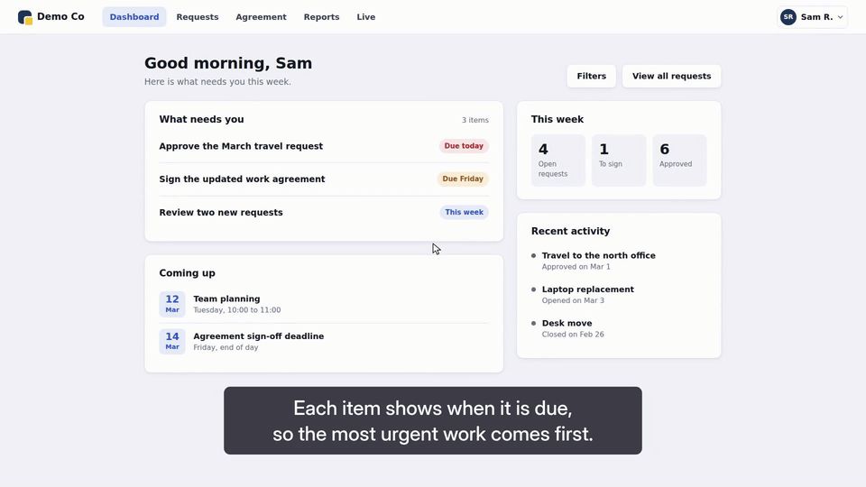

Narrated walkthroughs · Rendered locally · Audited moment by moment
Your app.
Your script.
On cue.
scenecast turns a short scene file into a narrated walkthrough video of your real web app.
Write the narration. Name the cue words. Record the real app, with every click and keystroke timed to the voice.
Free and open source. Runs on your machine. No accounts or API keys.
From scene file to finished videoShow / hide animation

The details that matter
What makes it different
Actions land on their words.
Each step names a cue word in the narration. scenecast uses word timings to land the action on that word, holding or trimming frames to absorb slow pages.
Scene files you can re-record.
Narration, selectors, seed data and sign-in live in YAML. When the app changes, render again. There is no timeline to edit by hand.
An audit of every moment.
The finished video is checked for timing, targets, captions, cropping, loading and loudness. You get a table, a contact sheet and an exit code.
Understand the auditCaptions that know the UI.
Captions move clear of the target, cursor and open panels, including during zooms. On phone scenes, they can sit beside the phone.
Made for real apps.
Use routes for feature flags, init scripts before the app loads, saved sessions for sign-in and touch input for phone scenes.
Local and free.
Voice by Kokoro, recognition by faster-whisper, recording by Playwright and composition by Revideo. All dependencies use open-source licences.
Third-party licencesStart with the included demo
Install + quick start
Use macOS or Linux (WSL works), Node.js 24 and pnpm 10. Allow about 2 GB for the models, Python environment and Chromium.
Run these commands in a clone of the repository. doctor sets up the local toolchain and models; the first run needs a network connection.
# in a clone of this repository
pnpm install
pnpm -C packages/cli exec playwright install chromium
node packages/cli/bin/scenecast.js doctor
# start the demo app (an invented product, included in the repo), then render its video
node examples/demo-app/server.mjs &
node packages/cli/bin/scenecast.js render examples/demo-app/video.yamlThe render writes out/demo.mp4, out/demo.srt, out/chapters.txt and out/audit/. Open out/audit/audit-table.md to see every moment checked.
To make your own video, copy examples/demo-app/video.yaml, point app.baseUrl at your app, then write your narration and steps.
One scene file, end to end
How it works
Describe the scenes.
Set the app URL, narration and selectors. Give each visible action a cue word.
Generate the voice.
Kokoro speaks the script locally. Word timings place each cue in the narration.
Record the app.
Playwright drives Chromium through the steps. The recording is retimed to keep actions on their words.
Compose the video.
Revideo adds zooms, rings, captions, cards and music, with a loudness-normalised mix.
Audit the result.
Speech recognition checks the final mix. Read every audit row and contact-sheet tile, fix failures and render again.